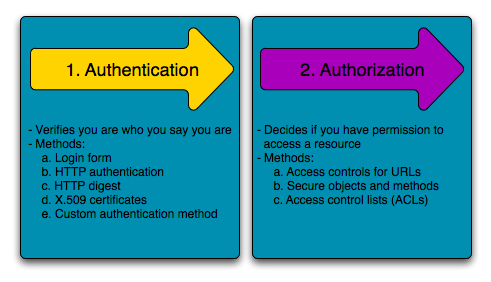
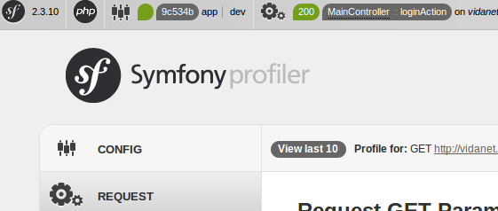

Symfony 2
Introduction to Symfony
and comparison with Yii
András Rutkai
The architecture
Who is this guy?
He is the Composer!
Dependency Injection (DI)
Dependency management
Lazy initialisation
MVC
There are some models in the ORM, but
we write the business logic in Services!
Namespacing
Autoloader
No more class pre-/postfixes
Everything has its own place
Modularity
Resources belong to bundles (packages)
Bundles belong to vendors
Dependencies among bundles
More features
Doctrine
A real ORM system
Tons of features
Automatic database schema manipulation
Similar to Hibernate
Entity validation
Implicit
OO custom validators
Advanced routing
Routes are now don't have to be in module/controller/action format
Url management by names
URL parameter restrictions
Automatic parameter conversion
Templating with Twig
Easier syntax
Restrictions in the view (e.g. no DB queries)
OO templates?
Security
Symfony firewall
 Authorization"/>
User roles
Caching
Built in caching for big configuration files
...and views
Unit testing
It's easy through DI
Semi-preconfigured PHPUnit
Datafixtures
Debugging

Symfony dev bar
The sizes
Tons of features
Tons of plugins
Huge community
The bad
Caching (again)
It's a real pain in the ass during development
Slow page loading in Dev mode because of the lack of caching
Complexity
You have to know what you're doing unless you make a big mess
This system requires a way more configurations than Yii
The french
Widgets?
There are no widgets! No more JS hacking.
No more self-initializer inputs :(
Conclusion?
Changing framework is a nightmare
but we could do TDD
refactoring would be easier
and we would have a much cleaner project
without AR traps
but smarter SQL queries.